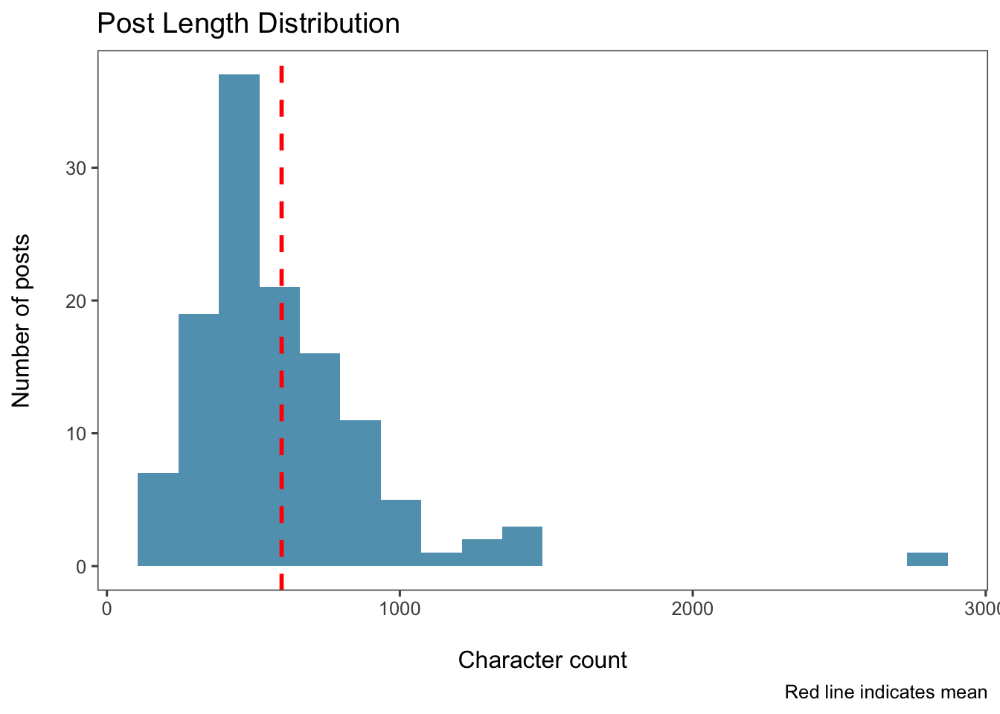
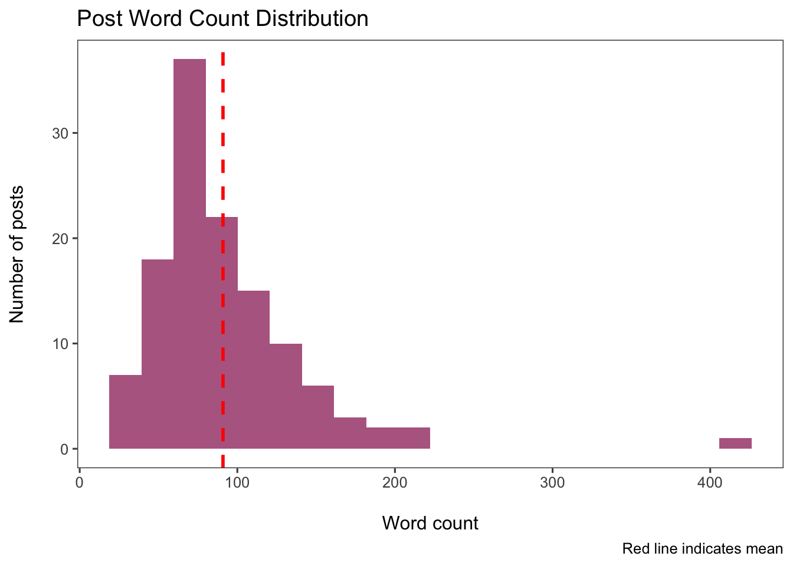
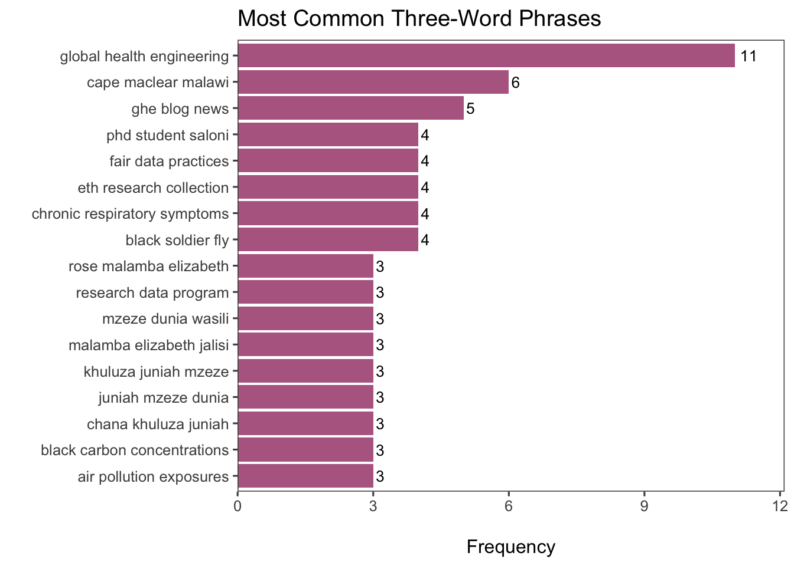

flowchart TD
raw["Google Sheets<br/>(raw data)"]
subgraph script["data_processing.R"]
p1["Read from Google Sheets"]
p2["Clean column names"]
p3["Anonymize author names"]
p4["Filter out breaks/empty posts"]
end
subgraph clean["clean-data/"]
c1["linkedin-posts.csv"]
end
raw --> p1
p1 --> p2
p2 --> p3
p3 --> p4
p4 --> c1
c1 --> analysis["analysis.qmd"]
style raw fill:#e1f5ff
style script fill:#fff4e1
style clean fill:#e8f5e9
GHE LinkedIn Posts
This analysis explores LinkedIn post content and patterns from Global Health Engineering team members. Posts are scheduled and authored by various team members, with content anonymized for privacy.
Data Processing Pipeline
The data is extracted from a Google Sheets document, processed to anonymize team member names (using consistent random IDs), and filtered to remove breaks and empty posts. The resulting dataset contains scheduled post dates, anonymized authors, and full post text content.
This README must be rendered with the following command in your terminal: quarto render analysis.qmd --to gfm --output README.md
Data Overview
The data covers the period from 2023-08-03 to 2026-01-08, with a total of 125 posts authored by 22 team members.
Content Analysis
Post Length Distribution
Display code
# Compute text statistics
posts_with_stats <- posts |>
mutate(
char_count = str_length(text),
word_count = str_count(text, "\\w+"),
line_count = str_count(text, "\n") + 1
)Display code
posts_with_stats |>
summarise(
`Mean Characters` = round(mean(char_count, na.rm = TRUE)),
`Median Characters` = round(median(char_count, na.rm = TRUE)),
`Mean Words` = round(mean(word_count, na.rm = TRUE)),
`Median Words` = round(median(word_count, na.rm = TRUE)),
`Max Characters` = max(char_count, na.rm = TRUE),
`Min Characters` = min(char_count, na.rm = TRUE)
) |>
pivot_longer(everything(), names_to = "Metric", values_to = "Value") |>
kable()| Metric | Value |
|---|---|
| Mean Characters | 596 |
| Median Characters | 503 |
| Mean Words | 91 |
| Median Words | 79 |
| Max Characters | 2801 |
| Min Characters | 175 |
Character Count Distribution
Display code
posts_with_stats |>
ggplot(aes(x = char_count)) +
geom_histogram(bins = 20, fill = "#2E86AB", alpha = 0.8) +
geom_vline(aes(xintercept = mean(char_count, na.rm = TRUE)),
color = "red", linetype = "dashed", linewidth = 1) +
labs(
x = "\nCharacter count",
y = "Number of posts\n",
title = "Post Length Distribution",
caption = "Red line indicates mean"
) +
theme_few()
Word Count Distribution
Display code
posts_with_stats |>
ggplot(aes(x = word_count)) +
geom_histogram(bins = 20, fill = "#A23B72", alpha = 0.8) +
geom_vline(aes(xintercept = mean(word_count, na.rm = TRUE)),
color = "red", linetype = "dashed", linewidth = 1) +
labs(
x = "\nWord count",
y = "Number of posts\n",
title = "Post Word Count Distribution",
caption = "Red line indicates mean"
) +
theme_few()
Content Keywords
Display code
# Simple word frequency analysis
library(tidytext)
posts |>
unnest_tokens(word, text) |>
anti_join(stop_words, by = "word") |>
filter(str_detect(word, "^[a-z]+$")) |> # Only alphabetic words
filter(word != "https") |>
count(word, sort = TRUE) |>
slice_max(n, n = 20) |>
kable()| word | n |
|---|---|
| data | 92 |
| research | 70 |
| waste | 48 |
| malawi | 47 |
| health | 36 |
| ghe | 34 |
| team | 33 |
| eth | 32 |
| student | 32 |
| biogas | 31 |
| openwashdata | 28 |
| project | 28 |
| engineering | 26 |
| global | 26 |
| carbon | 24 |
| plastic | 24 |
| blog | 23 |
| students | 23 |
| science | 21 |
| week | 21 |
Two-Word Phrases (Bigrams)
Display code
posts |>
unnest_tokens(bigram, text, token = "ngrams", n = 2) |>
filter(!is.na(bigram)) |>
separate(bigram, into = c("word1", "word2"), sep = " ", remove = FALSE) |>
filter(!word1 %in% stop_words$word) |>
filter(!word2 %in% stop_words$word) |>
filter(str_detect(word1, "^[a-z]+$")) |>
filter(str_detect(word2, "^[a-z]+$")) |>
filter(word1 != "https" & word2 != "https") |>
count(bigram, sort = TRUE) |>
slice_max(n, n = 20) |>
kable()| bigram | n |
|---|---|
| global health | 16 |
| health engineering | 12 |
| research data | 12 |
| elizabeth tilley | 11 |
| black carbon | 9 |
| blantyre malawi | 9 |
| waste management | 9 |
| cape maclear | 8 |
| colin walder | 8 |
| data science | 8 |
| phd student | 8 |
| plastic waste | 8 |
| saloni vijay | 8 |
| air pollution | 7 |
| data management | 7 |
| low cost | 7 |
| maclear malawi | 6 |
| padraic casserly | 6 |
| waste pickers | 6 |
| blog news | 5 |
| blog post | 5 |
| climate change | 5 |
| data practices | 5 |
| eth zurich | 5 |
| fair data | 5 |
| ghe blog | 5 |
| hope chilunga | 5 |
| lin boynton | 5 |
| research collection | 5 |
| south africa | 5 |
| student saloni | 5 |
Three-Word Phrases (Trigrams)
Display code
posts |>
unnest_tokens(trigram, text, token = "ngrams", n = 3) |>
filter(!is.na(trigram)) |>
separate(trigram, into = c("word1", "word2", "word3"), sep = " ", remove = FALSE) |>
filter(!word1 %in% stop_words$word) |>
filter(!word2 %in% stop_words$word) |>
filter(!word3 %in% stop_words$word) |>
filter(str_detect(word1, "^[a-z]+$")) |>
filter(str_detect(word2, "^[a-z]+$")) |>
filter(str_detect(word3, "^[a-z]+$")) |>
filter(word1 != "https" & word2 != "https" & word3 != "https") |>
count(trigram, sort = TRUE) |>
slice_max(n, n = 20) |>
kable()| trigram | n |
|---|---|
| global health engineering | 11 |
| cape maclear malawi | 6 |
| ghe blog news | 5 |
| black soldier fly | 4 |
| chronic respiratory symptoms | 4 |
| eth research collection | 4 |
| fair data practices | 4 |
| phd student saloni | 4 |
| air pollution exposures | 3 |
| black carbon concentrations | 3 |
| chana khuluza juniah | 3 |
| juniah mzeze dunia | 3 |
| khuluza juniah mzeze | 3 |
| malamba elizabeth jalisi | 3 |
| mzeze dunia wasili | 3 |
| research data program | 3 |
| rose malamba elizabeth | 3 |
| advancing black carbon | 2 |
| analysis ready data | 2 |
| anstead kankwatira rose | 2 |
| black carbon emissions | 2 |
| cleaning system design | 2 |
| climate change adaptation | 2 |
| comprehensive waste management | 2 |
| dunia wasili anstead | 2 |
| findable accessible interoperable | 2 |
| ghana confronting privilege | 2 |
| ghe senior scientist | 2 |
| greenhouse gas emissions | 2 |
| hope kelvin chilunga | 2 |
| informal waste pickers | 2 |
| kankwatira rose malamba | 2 |
| louis ambuehl till | 2 |
| mauka innocent matchipisa | 2 |
| mechanical engineering students | 2 |
| middle income countries | 2 |
| mixed plastic waste | 2 |
| natalie alice boyd | 2 |
| natalie boyd williams | 2 |
| phd student lin | 2 |
| phd student padraic | 2 |
| postdoc jan freihardt | 2 |
| pre cleaning system | 2 |
| project based learning | 2 |
| ramsey mauka innocent | 2 |
| research data management | 2 |
| respiratory symptoms air | 2 |
| scientist marc kalina | 2 |
| senior scientist marc | 2 |
| soldier fly larvae | 2 |
| solution advancing black | 2 |
| student lin boynton | 2 |
| student saloni vijay | 2 |
| swiss reproducibility network | 2 |
| symptoms air pollution | 2 |
| wasili anstead kankwatira | 2 |
| waste advisers malawi | 2 |
| waste management strategy | 2 |
| world toilet day | 2 |
Display code
posts |>
unnest_tokens(trigram, text, token = "ngrams", n = 3) |>
filter(!is.na(trigram)) |>
separate(trigram, into = c("word1", "word2", "word3"), sep = " ", remove = FALSE) |>
filter(!word1 %in% stop_words$word) |>
filter(!word2 %in% stop_words$word) |>
filter(!word3 %in% stop_words$word) |>
filter(str_detect(word1, "^[a-z]+$")) |>
filter(str_detect(word2, "^[a-z]+$")) |>
filter(str_detect(word3, "^[a-z]+$")) |>
filter(word1 != "https" & word2 != "https" & word3 != "https") |>
count(trigram, sort = TRUE) |>
slice_max(n, n = 15) |>
ggplot(aes(x = reorder(trigram, n), y = n)) +
geom_col(fill = "#A23B72", alpha = 0.8) +
geom_text(aes(label = n), hjust = -0.3, size = 3.5) +
coord_flip() +
labs(
x = "",
y = "\nFrequency",
title = "Most Common Three-Word Phrases"
) +
theme_few() +
scale_y_continuous(expand = expansion(mult = c(0, 0.1)))